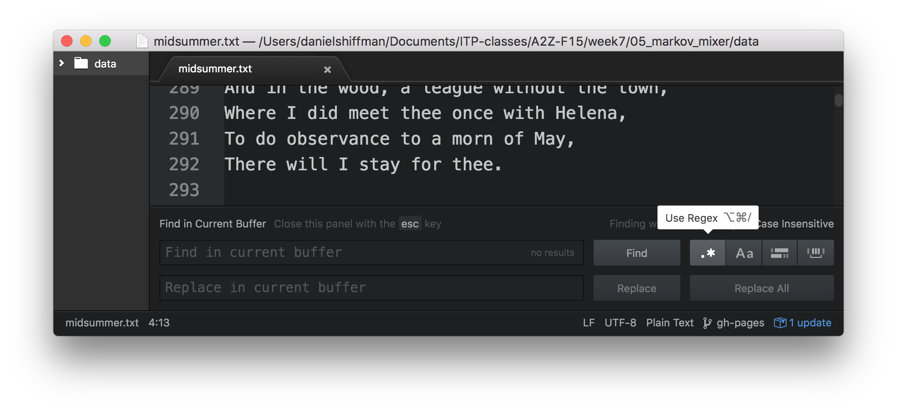
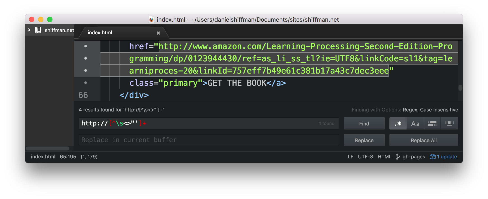
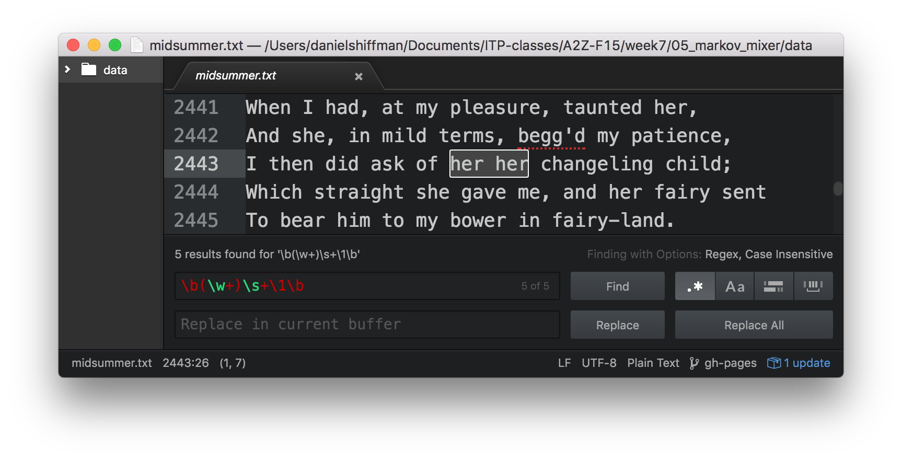
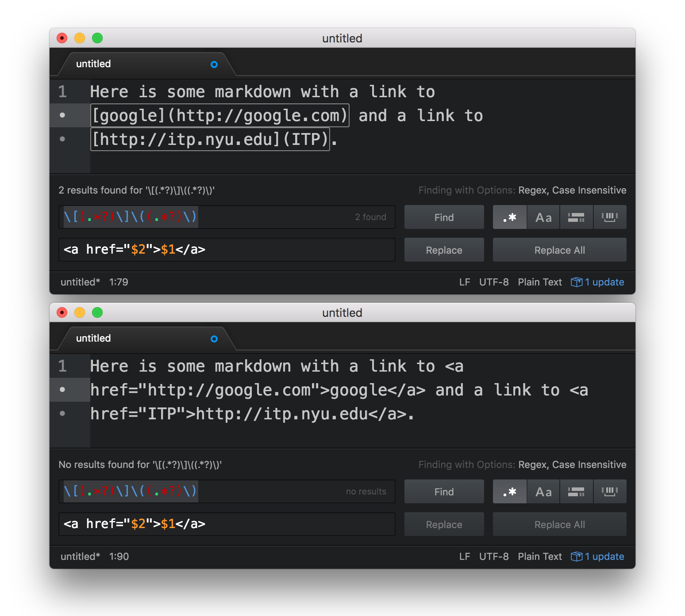

about
syllabus
All example source code
A regular expression is a sequence of characters that describes or matches a given amount of text. For example, the sequence bob, considered as a regular expression, would match any occurance of the word “bob” inside of another text. The following is a rather rudimentary introduction to the basics of regular expressions. We could spend the entire semester studying regular expressions if we put our mind to it. Nevertheless, we’ll just have a basic introduction to them this week and learn more advanced technique as we explore different text processing applications over the course of the semester.
A truly wonderful book written on the subject is: Mastering Regular Expressions by Jeffrey Friedl. I might recommend at least reading Chapter 1.
Regular expressions (referred to as “regex” for short) have both literal characters and meta characters. In bob, all three characters are literal, i.e. the “b” wants to match a “b”, the “o” an “o”, etc. We might also have the regular expression:
^bob
In this case, the ^ is a meta character, i.e. it does not want to match the character “^”, but instead indicates the “beginning of a line.” In other words the regex above would find a match in:
bob goes to the park.
but would not find a match in:
jill and bob go to the park.
Here are a few common meta-characters (I’m listing them below as they would appear in a JavaScript regular expression, which may differ slightly from other languages or environments) used to get us started:
. any one character
\d any digit from 0 to 9
\w any word character (a-z,A-Z,0-9)
\W any non-word character
\s any whitespace character
(tab, new line, form feed, end of line, carriage return)
\S any non whitespace character^ beginning of line
$ end of line
\b word boundary
\B a non word boundary? appearing once or not at all
* appearing zero or more times
+ appearing one or more times
{min,max} appearing within the specified rangeUsing the above, we could come up with some quick examples:
^$ — matches beginning of line followed by end of line, i.e. match any blank line!ing\b — matches “ing” followed by a word boundary, i.e. any time “ing” appears at the end of a word!Character Classes serve as a kind of or statement amongst individual characters and are denoted by characters enclosed in brackets, i.e. [aeiou] means match any vowel. Using a ^ negates the character class, i.e. [^aeiou] means match any character not a vowel (note this isn’t just limited to letters, it really means anything at all that is not an a, e, i, o, or u.) A hyphen indicates a range of characters, such as [0-9] or [a-z].
Another key metacharacter is |, meaning or. This is known as the concept of alternation.
John | Jon means match “John” or Jon”
Note: this regex could also be written as Joh?n, meaning match “Jon” with an optional “h” between the “o” and “n.”
Parentheses can also be used to constrain the alternation. For example, (212|646|917)\d* matches any sequence of zero or more digits preceded by 212, 646, or 917 (presumably to retrieve phone numbers with NYC area codes). Note this regular expression would need to be improved to take into consideration white spaces and/or punctuation.
Parentheses also serve the purpose of capturing groups for back-references. For example, examine the following regular expression: \b([0-9A-Za-z]+)s+\1\b.
The first part of the expression in parentheses reads: \b([0-9A-Za-z]+) meaning match any “word” containing at least one or more letters/digits. The next part \s+ means any sequence of at least one white space. The third part \1 says match whatever you matched that was enclosed inside the first set of parentheses, i.e. ([0-9A-Za-z]+). So, thinking this over, what will this regular expression match in the following line?
This is really really super super duper duper fun. Fun!
One quick way you can test regular expressions is with Atom text’s “find”. Simply enable the regex option (indicated by the .* button) after hitting ⌘F.

The Aa option makes the regular expression case-insensitive. Let’s look at some other examples (special thanks to Friedl”s Mastering Regular Expressions).
Matching urls: http://[^\s<>"']+
Checking this regex against shiffman.net/index.html yields the following results:

Here’s another regular expression example that uses a back reference to matches any repeated words \b(\w+)\s+\1\b.

(Note, in the above example, the metacharacter \b means “word boundary”, i.e. the beginning or end of a word.) Without checking for a word boundary the regex (\w+)\s+\1 would match “This is” for example.
Find/replace with regex in Sublime Text is also incredibly useful. For example, here’s how you might change all markdown urls of the format [name](link) to html <a href="link">name</a>.

In JavaScript, regular expressions like Strings are objects. For example, a regex object can be created like so:
var regex = new RegExp('aregex');While the above is technically correct (and sometimes necessary, we’ll get to this later), a more common way to create a regex in JavaScript is with forward slashes. Whereas a String is an array of characters between quotes, a regex is an array of characters between forward slashes. For example:
var regex = /aregex/;The RegExp object has several methods. The first thing you might try is the test() function which returns true or false depending on if the string passed in matches the regex. This can be used to validate an e-mail address for example.
var email = /\w+@\w+\.(net|com|edu|org)/;
if (email.test("daniel@shiffman.net")) {
console.log("That's a valid e-mail!");
}The JavaScript String object also has several methods which accept regular expressions as input. For example search() is a function that works similarly to indexOf(). It looks for a regular expression match and returns the index of that match.
var zipcode = "My zip code is 90210";
var index = zipcode.search(/\d{5}/);
console.log("The zip code is at index: " + index);Probably the most useful regular expression method is match(). match() is a method of the String object that returns the matches of a regular expression.
var txt = "This is a test."; // The String the search in
var regex = /test/; // The regex
var results = txt.match(regex); // Execute the searchresults now contains the following array:
[ 'test' ]If the regular expression includes capturing parenthese, the groups would also appear in the array. For example, let’s say you needed a regex to match a phone number a string.
var txt = 'Phone numbers: 212-555-1234 and 917-555-4321 and 646.555.9876.';
var regex = /(\d+)[-.]\d+[-.]\d+/;
var results = txt.match(regex);The above isn’t necessarily the greatest phone number matching regex, but it’ll do for this example. One or more numbers followed by a dash or period followed by one or more numbers, a dash or period again, and one or more numbers. Let’s look at the resulting array.
[ '212-555-1234', '212' ]Notice how the full phone number match appears as the first (index 0) element and the captured group (the area code) follows. You might notice, however, that there are three phone numbers in the original input String and yet match() only matched the first one. In order to find all the matches, we’ll need to add several other steps.
g.Regular expressions can include flags that modify how the search operates. For example the flag i is for case-insensitivity so that the regular expression hello with the flag i would match “hello”, “Hello”, “HELLO”, and “hElLO” (and other permutations). A flag is added after the second forward slash like so: /hello/i. The global flag g tells the regular expression that we want to search for all of the matches and not just the first one.
// Now includes the global flag
var regex = /(\d+)[-.]\d+[-.]\d+/g; Let’s look at what happens when you run the same code now.
var txt = 'Phone numbers: 212-555-1234 and 917-555-4321 and 646.555.9876.';
var regex = /(\d+)[-.]\d+[-.]\d+/g;
var results = txt.match(regex);The results:
["212-555-1234", "917-555-4321", "646.555.9876"]Notice how match() now returns all of the matches in original string as elements of the array. However, the captured group for the area codes is now lost. If there are multiple matches and you want to have captured groups, you have to instead use the exec() method which is part of the RegExp object.
In the case of a single match, the exec() function works identically to match(). The exec() function, even with the global flag, will still return only the first match. However, if you call exec() a second time with the same regex and input string, it will move on and return the results for the second match (or null if there is no match.) You can therefore write a while loop to keep checking until the result is null.
var text = 'Phone numbers: 212-555-1234 and 917-555-4321 and 646.555.9876.';
var regex = /(\d+)[-.]\d+[-.]\d+/g;
var results = regex.exec(text);
while (results != null) {
// do something with the matched results and then
// Check again
results = regex.exec(text);
}This could also be written with the following shorthand (The examples linked from here, however, use the longer-winded code for clarity.)
while (var results = regex.exec(text)) {
// do something with the matched results
}I can now revisit the week 2 discussion of p5’s split() and splitTokens() functions and look at how regular expressions work as a delimiter with the native String split() method. In this case, a string is split into an array of substrings beginning at each match of that regular expression. Here’s a simple example that quickyl counts the # of words (not perfect by any means).
var text = "This text has characters, spaces, and some punctuation.";
// one or more non-word chars (anything not a-z0-9)
var regex = /\W+/;
var words = text.split(regex);
console.log('Total words: ' + words.length);The words array now contains:
[ 'This',
'text',
'has',
'characters',
'spaces',
'and',
'some',
'punctuation'
]What if you, however, would like to include all the delimiters? To accomplish this, simply enclose your delimiters in capturing parentheses. With var regex = /(\W+)/; therefore you’ll get the following result.
[ 'This',
' ',
'text',
' ',
'has',
' ',
'characters',
', ',
'spaces',
', ',
'and',
' ',
'some',
' ',
'punctuation',
'.',
'' ]Running a search and replace is one of the more powerful things one can do with regular expressions. This can be accomplished with the String’s replace() method. The method receives two arguments, a regex and a replacement string. Wherever there is a regex match, it is replaced with the string provided.
var text = 'Replace every time the word "the" appears with the word ze.';
// \b is a word boundary
// You can think of this as an invisible boundary
// between a non-word character and a word character.
var regex = /\bthe\b/g;
var replaced = text.replace(regex,'ze');The result is:
Replace every time ze word "ze" appears with ze word ze.
We can also reference the matched text using a backreference to a captured group in the substitution string. A backreference to the first group is indicated as $1, $2 is the second, and so on and so forth.
var text = "Double the vowels.";
var regex = /([aeiou]+)/g;
var replaced = text.replace(regex, '$1$1');The result is:
Dououblee thee vooweels
The replace() function also allows you to pass a callback where you can write your own code and return the text that replaces any given match of the regex. This allows enormous flexibility and power because the logic of how you replace text can be written with code rather than simply encoded into a string. Let’s say you have some text:
var txt = "This is some text with words of variable length."You can then call replace() to search with a regular expression (the following matches any words 3-5 characters long), and pass in a function call as the second argument.
var output = txt.replace(/\b[a-z]{4,6}\b/gi, replacer);The callback will be executed multiple times, as many times as the regex matches. The callback will receive the matched text as an argument and replace it with whatever you return.
function replacer(match) {
var len = match.length;
// Four letter words become uppercase
if (len == 4) {
return match.toUpperCase();
// Five letter words become "five"
} else if (len == 5) {
return "five";
// Six letter words turn into today's date
} else if (len == 6) {
return Date();
}
}The original text now reads:
THIS is SOME TEXT WITH five of variable Mon Sep 19 2016 13:59:22 GMT-0400 (EDT).The above result is silly and nonsensical, but it shows the beginnings of what is possible when you can execute any logic and call any other functions (query an API?) inside a replace() callback.
You can try out some regex below as well as take a look at the code for making this regex tester. While this works here, if you really want to just mess around with regex in the browser I recommend RegExr: Learn, Build< Test Regex.
globalcase insensitive
You can also explore this walk-through of JS regex functionality.